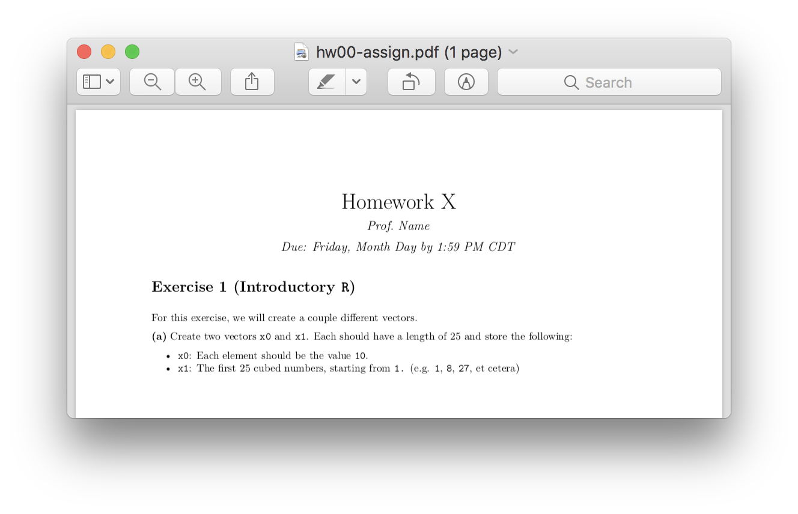
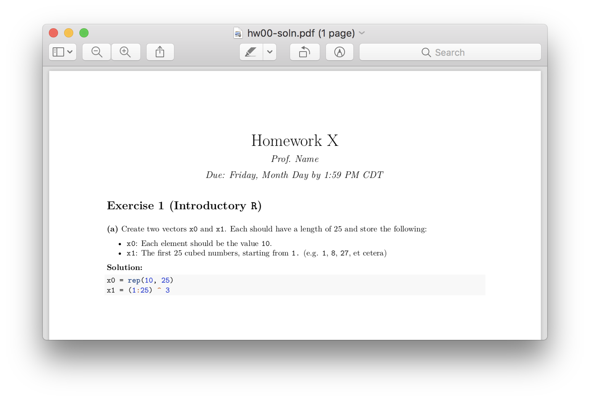

Tools for creating homework assignments and solutions using RMarkdown.
Motivation
Writing homework assignments for students in the age of RMarkdown necessitates the creation of two separate documents – assign.Rmd and soln.Rmd. The goal of assignr is to create one document main.Rmd that can be broken apart into the above two documents. Thus, there is no longer a need to copy and paste between the assign and the soln documents as all of the contents are together in one file.

assignr
Installation
assignr is only available via GitHub.
To install the package from GitHub, you can type:
install.packages("devtools")
devtools::install_github("coatless-rpkg/assignr")Usage
To use assignr, create an Rmd file named WXYZ-main.Rmd, where WXYZ could be hw00. Within the file, add to your code chunks one of the following chunk options:
-
solution = TRUE- to mark a solution
-
directions = TRUE- to indicate directions
When specifying text directions that should not appear in the solution file, use the latter chunk option, and set the code chunk engine to asis, e.g.
```{asis name, directions = TRUE}
The goal of the following exercise is...
```Then, in R, run:
# Render output
assignr("hw00-main.Rmd")Example Output:
hw00
├── hw00-assign
│ ├── hw00-assign.Rmd
│ ├── hw00-assign.html
│ ├── hw00-assign.pdf
│ └── hw00-assign.zip
└── hw00-soln
├── hw00-soln.Rmd
├── hw00-soln.html
├── hw00-soln.pdf
└── hw00-soln.zipPreviews of what is contained in each file are shown next.
Instructor Main
In the main file, denoted as *-main.Rmd, all content – including solutions – should be placed. As an example of contents, please see the hw00-main.Rmd document that ships with the package.
library("assignr")
file.show(get_example_filepath("hw00-main.Rmd"))---
title: 'Homework X'
author: "Prof. Name"
date: 'Due: Friday, Month Day by 1:59 PM CDT'
output:
html_document:
theme: readable
toc: yes
---
# Exercise 1 (Introductory `R`)
```{asis, directions = TRUE}
For this exercise, we will create a couple different vectors.
```
**(a)** Create two vectors `x0` and `x1`. Each should have a
length of 25 and store the following:
- `x0`: Each element should be the value `10`.
- `x1`: The first 25 cubed numbers, starting from `1.` (e.g. `1`, `8`, `27`, et cetera)
```{asis, solution = TRUE}
**Solution:**
```
```{r, solution = TRUE}
x0 = rep(10, 25)
x1 = (1:25) ^ 3
```Student Assignment
Within this section, the assignment rmarkdown file given to students is displayed.
---
title: 'Homework X'
author: "Prof. Name"
date: 'Due: Friday, Month Day by 1:59 PM CDT'
output:
html_document:
theme: readable
toc: yes
---
# Exercise 1 (Introductory `R`)
For this exercise, we will create a couple different vectors.
**(a)** Create two vectors `x0` and `x1`. Each should have a
length of 25 and store the following:
- `x0`: Each element should be the value `10`.
- `x1`: The first 25 cubed numbers, starting from `1.` (e.g. `1`, `8`, `27`, et cetera)
hw00-assign.Rmd
Solutions
Lastly, we have the assignment rmarkdown file that contains the solutions and their respective output.
---
title: 'Homework X'
author: "Prof. Name"
date: 'Due: Friday, Month Day by 1:59 PM CDT'
output:
html_document:
theme: readable
toc: yes
---
# Exercise 1 (Introductory `R`)
**(a)** Create two vectors `x0` and `x1`. Each should have a
length of 25 and store the following:
- `x0`: Each element should be the value `10`.
- `x1`: The first 25 cubed numbers, starting from `1.` (e.g. `1`, `8`, `27`, et cetera)
**Solution:**
```{r, solution = TRUE}
x0 = rep(10, 25)
x1 = (1:25) ^ 3
```
hw00-soln.Rmd